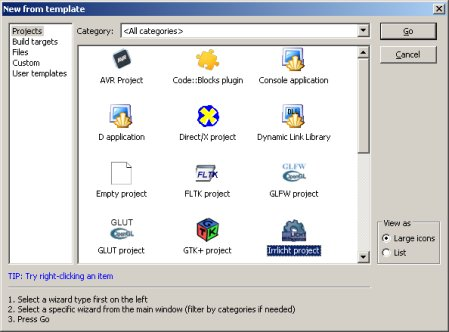
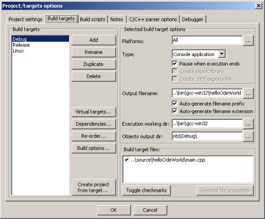
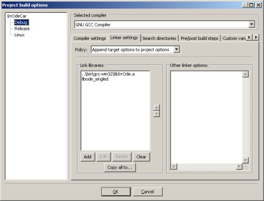
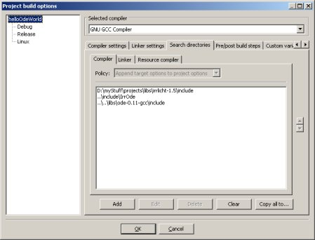

Step 1: setting up the project
Use the Code::Blocks project creation wizard and create an Irrlicht project.

Set the execution working dir to your working dir in the project/target options dialog, tab "build targets"

After this go to the "Linker" tab of the "Project Build Options" dialog and add ">irrOdeDirectory</bin/gcc-win32/libIrrOde.a" and the ODE lib you have created, e.g. "libode_single.a". Make sure "libIrrOde.a" is the first lib in the list.

Now go to the "Search Directories" tab of the "Project Build Options" dialog and add the "<IrrOde directory>/include/irrOde" and the "<ODE directory>/include" directory.

After adding the file "IrrODE.h" to the includes in your main.cpp file and cleaning the comments from the file created by the Wizard your file should look like this:
#include <irrlicht.h>
#include <IrrODE.h>
using namespace irr;
using namespace core;
using namespace scene;
using namespace video;
using namespace io;
using namespace gui;
using namespace ode; //This is the namespace of all IrrODE stuff
int main(int argc, char** argv) {
IrrlichtDevice *device=createDevice(EDT_DIRECT3D9,dimension2d(640,480),
16,false,false,false,0);
device->setWindowCaption(L"HelloOdeWorld");
IVideoDriver* driver = device->getVideoDriver();
ISceneManager* smgr = device->getSceneManager();
IGUIEnvironment* guienv = device->getGUIEnvironment();
while(device->run()) {
driver->beginScene(true, true, SColor(0,200,200,200));
smgr->drawAll();
guienv->drawAll();
driver->endScene();
}
device->drop();
return 0;
}
Your project should now compile and run. You'll get an impressive gray screen.Step 2: initialize IrrOde:
The first thing to do for initializing IrrODE is to register an instance of the CIrrOdeSceneNodeFactory.
CIrrOdeSceneNodeFactory cFactory(smgr); smgr->registerSceneNodeFactory(&cFactory);With this scene node factory you can add all IrrOde scenenodes using the scenemanager. We'll see that later on.
Next we init ODE using the singleton instance of the CIrrOdeMananger and install it. With that installation IrrOde gets the timer and the scene manager it needs.
//install the ODE CIrrOdeManager::getSharedInstance()->install(device);Step 3: load an IrrODE scene
Before adding objects to the system we init ODE.
CIrrOdeManager::getSharedInstance()->initODE();The normal way of using IrrOde is to create scenes with the "IrrOdEdit" plugin for the IrrEdit scene editor. See tutorial 3 for details about that, for the moment we just load the scene:
smgr->loadScene("../../data/IrrOdEdit_example.xml");
In order to make IrrOde initialize the physics entities of the objects we have added until now we tell the worldNode to do so.
worldNode->initPhysics();Note that when adding objects to the world during runtime you do also have to call the "initPhysics" method of the object. If you do e.g. call the method of a CIrrOdeBody object it will also init the physics of all it's children so there is not need to manually call all these methods.
Before we can see anything we need to add a camera to the scene, set it to an apropriate position and make it face the scene.
ICameraSceneNode *cam=smgr->addCameraSceneNode(); cam->setPosition(vector3df(-20.0f, 15.0f, -20.0f)); cam->setTarget(vector3df(0.0f,0.0f,0.0f));The final thing to do is to adjust the main loop of the program so that our world get steped in each frame. Please note that the default IrrODE rate is 60fps (0.016s/step), so that even if your computer makes a higher framerate IrrODE will automatically get the physic's rate down to that value. Please read the ODE wiki on their homepage on why it is important to have a constant time step value and all other information you may want to have.
while(device->run()) {
CIrrOdeManager::getSharedInstance()->step();
driver->beginScene(true, true, SColor(0,200,200,200));
smgr->drawAll();
guienv->drawAll();
driver->endScene();
}
After all this hard and dirty work you can finally compile and run your first IrrODE application.